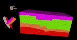
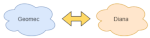
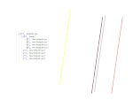
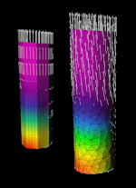

 |
Improvements for the Earth-Fusion-Flow workflow. Geomec handles the SKUA import from Earth better, and communicates more warnings and errors to Flow. | |
 |
Geomec and Diana are more firmly split in the way they run. This provides more stability when one of the processes stops, for example, due to missing an intermittent license check. | |
 |
Wellpaths in the model can be gathered together in user-defined groups. The groups contain a description and can be locked. | |
 |
The well zoom-in model can use a tetrahedral mesh. This is still an EXPERIMENTAL feature. Once it is fully developed, it provides better simulation results near the formation horizons. At that point, it will also be available for the casing model. | |